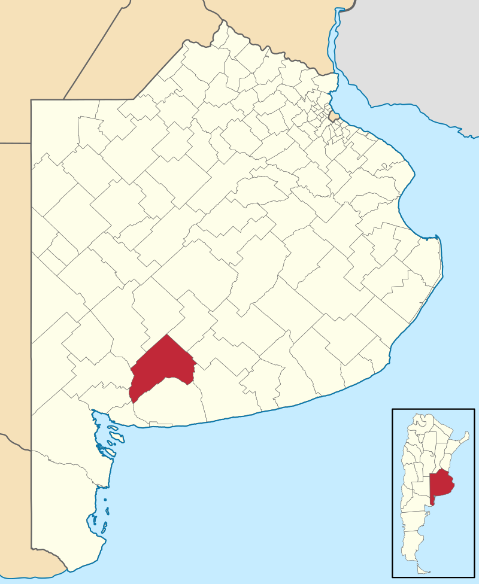
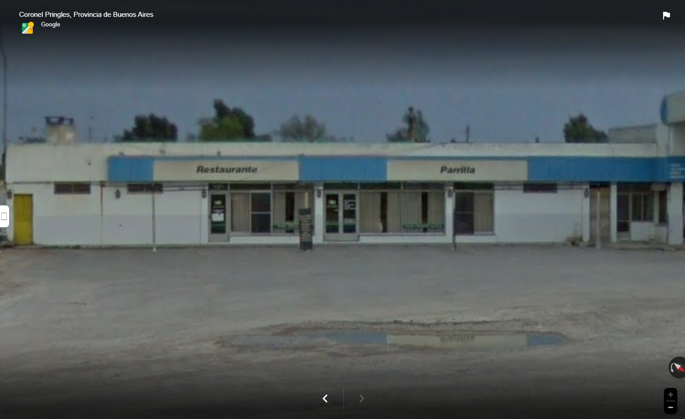

El clíma llega cuando se organiza una gran competencia gastronómica local donde varios
restaurantes presentan sus mejores platillos. Para defender el legado familiar e inten-
tar atraer más clientela al Refugio de Sabor.
Clara decide participar junto con Don Ma nuel utilizando una receta secreta de su abuelo
que nunca había visto antes. Durante la competencia,
Clara no solo pone a prueba sus habilidades culinarias, sino también su conexión con el pasado
y su deseo de innovar mejores platillos. Para defender el legado familiar e intentar atraer más
clientela al Refugio de Sabor, Clara decide
participar junto conDon Manuel, utilizando una receta secreta de su abuelo que nunca había visto antes.
Ciudad: Coronel Pringles

